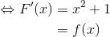
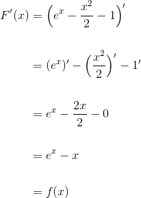

Exerciții și probleme rezolvate pentru profilul tehnologic
- Această problemă a fost dată în sesiunea iunie - iulie a anului 2012, pentru profilele științele naturii și tehnologic, la subiectul III, exercițiul 2.
Se consideră funcția 
- Arătați că funcția
 este o primitivă a funcției
este o primitivă a funcției  .
. - Calculați

- Determinați volumul corpului obținut prin rotația în jurul axei
 a graficului funcției
a graficului funcției ![g:[1,2]\to\mathbb{R},\ g(x)=\frac{f(x)}{x}.](https://media.liceunet.ro/files/webbooks/images/257/equations/sEeSN09koL9AzlsxDrf7EA==.gif)
- Pentru a arăta că funcția
 este o primitivă a funcței arătăm că
este o primitivă a funcței arătăm că 
Funcția este derivabilă. Atunci:
Rezultă că funcția este o primitivă a funcței .
- Calculăm
![\begin{align*} \int_{1}^{e} f(\ln{x})\mathrm{dx}&=\int_{1}^{e} \ln{x}\cdot e^{\ln{x}}\mathrm{dx}\\\\ &=\int_{1}^{e} x\cdot \ln{x}\mathrm{dx}\\ \\&=\frac{x^2}{2}\cdot\ln{x}\Big|_1^e-\int_{1}^{e}\frac{x^2}{2}\cdot\frac{1}{x}\mathrm{dx}\\\\ &=\Big(\frac{e^2}{2}\cdot\ln{e}-\frac{1^2}{2}\cdot\ln{1}\Big)-\frac{1}{2}\int_{1}^{e} x\ \mathrm{dx}\\\\ &=\Big(\frac{e^2}{2}\cdot1-\frac{1^2}{2}\cdot0\Big)-\frac{1}{2}\cdot\frac{x^2}{2}\Big|_1^e\\\\ &=\frac{e^2}{2}-\frac{1}{2}\Big(\frac{e^2}{2}-\frac{1^2}{2}\Big)\\\\ &=\frac{e^2}{2}-\frac{1}{2}\cdot\frac{e^2}{2}+\frac{1}{4}\\\\ &=\frac{2e^2-e^2+1}{4}\\\\ &=\frac{e^2+1}{4} \end{align*}](../../media/webbooks/404/2812/images/equations/oybfwaf-mcf4uoojpb_f5g==.gif)

- Calculăm


- Această problemă a fost dată în sesiunea august-septembrie a anului 2013, pentru profilul tehnologic, la subiectul III, exercițiul 2.
Bacalaureat Matematică 2013 | Tehnologic | Sesiunea august - septembrie | Subiectul III
Se consideră funcția 
- Verificați dacă funcția
 este o primitivă a funcției
este o primitivă a funcției  .
. - Calculați aria suprafeței plane delimitate de graficul funcției , axa
 și dreptele de ecuație
și dreptele de ecuație  și
și 
- Arătați că

- Calculăm



Rezultă că este o primitivă a funcției .
- Calculăm aria suprafeței plane cu următoarea formulă:
Aria suprafeței plane delimitate de graficul funcției , axa și dreptele de ecuație și  este
este 
- Calculăm


- Această problemă a fost dată în sesiunea iunie - iulie a anului 2014, pentru profilul tehnologic, la subiectul III, exercițiul 2.
Bacalaureat Matematică 2014 | Tehnologic | Sesiunea iunie - iulie | Subiectul III
Se consideră funcțiile  și
și  .
.
- Arătați că
 .
. - Arătați că funcția
 este o primitivă a funcției
este o primitivă a funcției  .
. - Calculați
 .
.
- Calculăm
 .
.
 .
.
- Pentru a arăta că este o primitivă a funcției trebuie să arătăm că
 .
.

.
Deci este o primitivă a funcției .
- Calculăm .

- Această problemă a fost dată ca și model de subiect în anul 2014, pentru profilul tehnologic, la subiectul III, exercițiul 2.
Bacalaureat Matematică 2014 | Tehnologic | Model de subiect | Subiectul III
Se consideră funcția 
- Calculați

- Determinați primitivă
 a funcției
a funcției  pentru care
pentru care 
- Determinați volumul corpului obținut prin rotația în jurul axei
 a graficului funcției
a graficului funcției ![g:[1,2]\to\mathbb{R}, \ g(x)=xf(x).](https://media.liceunet.ro/files/webbooks/images/224/equations/c66eYviS5HnkbmOXIxM-bQ==.gif)
- Calculăm

- Determinăm primitivă a funcției pentru care
O primitivă a funcției  este
este  de forma:
de forma:
 unde
unde 
Calculăm  :
:


- Calculăm volumul corpului obținut prin rotația în jurul axei a graficului funcției
![g:[1,2]\to\mathbb{R}, \ g(x)=xf(x)](https://media.liceunet.ro/files/webbooks/images/224/equations/Xab-peitl-nhODmY8GEb4w==.gif) .
.
Calculăm 
Acum putem calcula volumul, folosind următoarea formulă:
![\begin{align*} V &=\int_{1}^{2} \pi g^2(x)\ dx\\\\ &=\int_{1}^{2} \pi (3x-1)^2 \ dx\\\\ &=\pi\int_{1}^{2}(3x-1)^2\ dx\\\\ &=\pi\int_1^2 (9x^2-6x+1)\ dx\\\\ &=\pi \Big[9\int_1^2x^2\ dx-6\int_1^2 x\ dx+\int_1^2 1\ dx\Big]\\\\ &=\pi\Big( 9\cdot\frac{x^3}{3}\Big|_1^2-6\cdot\frac{x^2}{2}\Big|_1^2+x\Big|_1^2\Big)\\\\ &=\pi\Big( 3x^3\Big|_1^2-3x^2\Big|_1^2+x\Big|_1^2\Big)\\\\ &=\pi\Big[ 3(2^3-1^3)-3(2^2-1^2)+(2-1)\Big]\\\\ &=\pi\Big[ 3(8-1)-3(4-1)+1\Big]\\\\ &=\pi\Big( 3\cdot7-3\cdot3+1\Big)\\\\ &=\pi\Big( 21-9+1\Big)\\\\ &=13\pi \end{align*}](../../media/webbooks/404/2812/images/equations/d6wssoh1qe39q8m1uh7o5a==.gif)
Volumul corpului obținut prin rotația în jurul axei a graficului funcției este 
- Această problemă a fost dată în sesiunea specială a anului 2015, pentru profilul tehnologic, la subiectul III, exercițiul 2.
Bacalaureat Matematică 2015 | Tehnologic | Sesiunea specială | Subiectul III
Se consideră funcția  ,
,  .
.
- Arătați că
 .
. - Demonstrați că funcția
 ,
,  este o primitivă a funcției
este o primitivă a funcției  .
. - Arătați că suprafața delimitată de graficul funției
 ,
,  , axa
, axa  și dreptele de ecuații
și dreptele de ecuații  și
și  , are aria egală cu
, are aria egală cu  .
.
- Calculăm
 .
.
- Calculăm
 .
.

 este o primitivă a funcției .
este o primitivă a funcției .


 .
.
- Această problemă a fost dată în sesiunea august-septembrie a anului 2012, pentru profilul tehnologic, la subiectul III, exercițiul 2.
Bacalaureat Matematică 2015 | Tehnologic | Sesiunea august - septembrie | Subiectul III
Se consideră funcția  ,
,  .
.
- Arătați că
 .
. - Determinați aria suprafeței plane delimitate de graficul funcției
 ,
,  , axa
, axa  și dreptele de ecuații
și dreptele de ecuații  și
și  .
. - Determinați numărul real
 ,
,  , pentru care
, pentru care  .
.
- Calculăm
 .
.
 .
.
- Calculăm aria.

- Calculăm
 .
.
Dar .
Rezultă că  .
.
Dacă îți dorești să vezi și să rezolvi mai multe probleme în care intervine calculul integral, atunci poți accesa unul din eBook-urile următoare (Subiectul III, exercițiul 2):
Bacalaureat Matematică 2012 | Științele naturii și Tehnologic | Model de subiect | Subiectul III
Bacalaureat Matematică 2012 | Științele naturii și Tehnologic | Sesiunea specială | Subiectul III
Bacalaureat Matematică 2013 | Tehnologic | Model de subiect | Subiectul III
Bacalaureat Matematică 2013 | Tehnologic | Sesiunea iunie - iulie | Subiectul III
Bacalaureat Matematică 2013 | Tehnologic | Sesiunea specială | Subiectul III
Bacalaureat Matematică 2014 | Tehnologic | Sesiunea august - septembrie | Subiectul III
Bacalaureat Matematică 2014 | Tehnologic | Sesiunea specială | Subiectul III
Bacalaureat Matematică 2015 | Tehnologic | Sesiunea iunie - iulie | Subiectul III